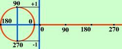
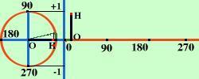
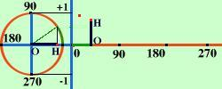
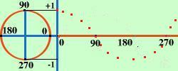
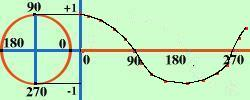
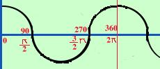

| Dobbiamo immaginare di "srotolare" una circonferenza sull'asse
delle x |

|
| ora per ogni angolo prendiamo sulle x la lunghezza dell'arco e per
le y prendiamo l'orizzontale OH, la mettiamo in verticale e la
riportiamo sul grafico per la y |
 |
| Aumentiamo l'angolo e facciamo lo stesso |
 |
| Facciamolo per diversi valori dell'angolo in modo da
ottenere vari punti |
 |
| Congiungiamo i vari punti con una linea continua ed
otteniamo il grafico della cosinusoide |
 |
| y = cos x |
 |